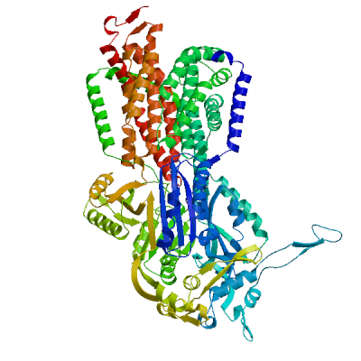
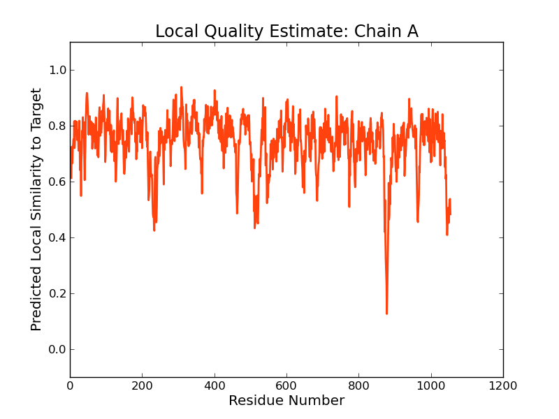
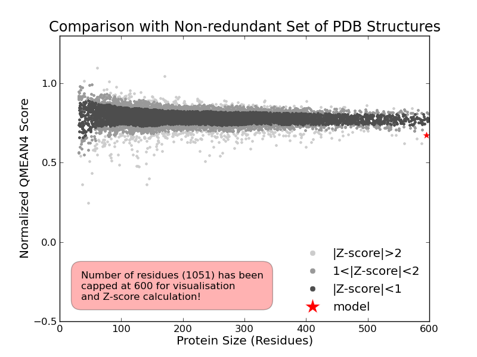
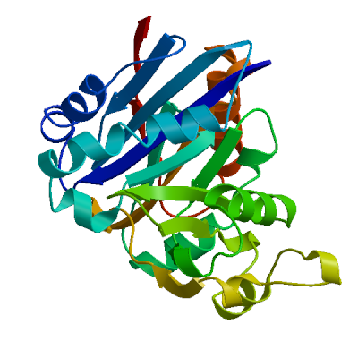
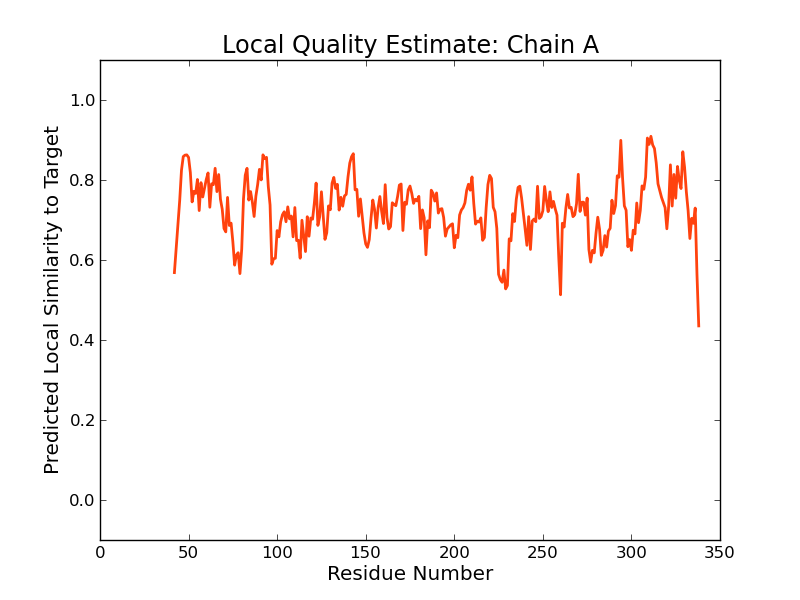
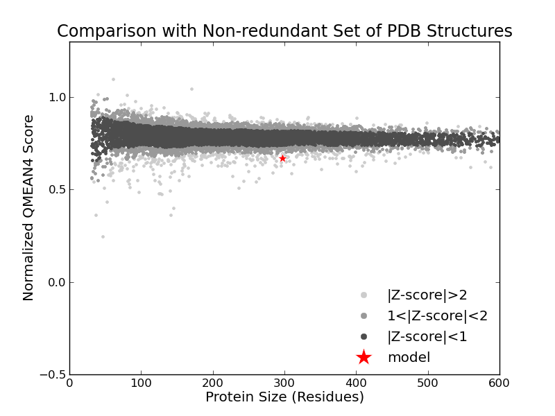

SWISS-MODEL Homology Modelling Report |
Model Building Report
This document lists the results for the homology modelling project "T451DRAFT_2703" submitted to SWISS-MODEL workspace on July 14, 2017, 9:19 p.m..The submitted primary amino acid sequence is given in Table T1.
If you use any results in your research, please cite the relevant publications:
Marco Biasini; Stefan Bienert; Andrew Waterhouse; Konstantin Arnold; Gabriel Studer; Tobias Schmidt; Florian Kiefer; Tiziano Gallo Cassarino; Martino Bertoni; Lorenza Bordoli; Torsten Schwede. (2014). SWISS-MODEL: modelling protein tertiary and quaternary structure using evolutionary information. Nucleic Acids Research (1 July 2014) 42 (W1): W252-W258; doi: 10.1093/nar/gku340.Arnold, K., Bordoli, L., Kopp, J. and Schwede, T. (2006) The SWISS-MODEL workspace: a web-based environment for protein structure homology modelling. Bioinformatics, 22, 195-201.
Benkert, P., Biasini, M. and Schwede, T. (2011) Toward the estimation of the absolute quality of individual protein structure models. Bioinformatics, 27, 343-350
Results
The SWISS-MODEL template library (SMTL version 2017-07-12, PDB release 2017-07-07) was searched with Blast (Altschul et al., 1997) and HHBlits (Remmert, et al., 2011) for evolutionary related structures matching the target sequence in Table T1. For details on the template search, see Materials and Methods. Overall 405 templates were found (Table T2).
Models
The following models were built (see Materials and Methods "Model Building"):
Model #01 | File | Built with | Oligo-State | Ligands | GMQE | QMEAN |
|---|---|---|---|---|---|---|
|  | PDB | ProMod3 Version 1.0.2. | MONOMER | None | 0.74 | -2.62 |
|  |  |
| Template | Seq Identity | Oligo-state | Found by | Method | Resolution | Seq Similarity | Range | Coverage | Description |
|---|---|---|---|---|---|---|---|---|---|
| 4dx6.1.A | 41.75 | hetero-oligomer | HHblits | X-ray | 2.90Å | 0.40 | 4 - 1054 | 0.98 | Acriflavine resistance protein B |
| Ligand | Added to Model | Description |
|---|---|---|
| LMT | ✕ - Binding site not conserved. | DODECYL-BETA-D-MALTOSIDE |
| LMT | ✕ - Binding site not conserved. | DODECYL-BETA-D-MALTOSIDE |
| LMT | ✕ - Binding site not conserved. | DODECYL-BETA-D-MALTOSIDE |
| LMT | ✕ - Binding site not conserved. | DODECYL-BETA-D-MALTOSIDE |
| LMT | ✕ - Binding site not conserved. | DODECYL-BETA-D-MALTOSIDE |
| LMT | ✕ - Binding site not conserved. | DODECYL-BETA-D-MALTOSIDE |
| LMT | ✕ - Binding site not conserved. | DODECYL-BETA-D-MALTOSIDE |
Target MNRFTHFFIDRPIFASVLSIVIVLVGGLALIGLPIAQYPEIAPPTVVVSAVYPGANATVVAETLATPIEQEVNGVEDMLY
4dx6.1.A ---MPNFFIDRPIFAWVIAIIIMLAGGLAILKLPVAQYPTIAPPAVTISASYPGADAKTVQDTVTQVIEQNMNGIDNLMY
Target MSSQS-TNSGSMALTITFKPGTDLDKAQVLVQNRVALAEPKLPQEVSRQGISVKKRSPDLSLVVNLISPDKRYDSVYLSN
4dx6.1.A MSSNSDS-TGTVQITLTFESGTDADIAQVQVQNKLQLAMPLLPQEVQQQGVSVEKSSSSFLMVVGVINTDGTMTQEDISD
Target YALLQIKDTLARLPGVGDIIVFGARDYSMRLWLNPEKVAARNLTATDVVNAMREQNIQVAAGVVGQQPTKESTDFQYTVS
4dx6.1.A YVAANMKDAISRTSGVGDVQLFGS-QYAMRIWMNPNELNKFQLTPVDVITAIKAQNAQVAAGQLGGTPPVKGQQLNASII
Target TLGRLMEAEQFADIVIKKGADGQVTRLKDVARIELGAKDYNSGLFLDGEPTVGLAIFQLPGSNALETKKAVVDTMEKLKT
4dx6.1.A AQTRLTSTEEFGKILLKVNQDGSRVLLRDVAKIELGGENYDIIAEFNGQPASGLGIKLATGANALDTAAAIRAELAKMEP
Target RFPEGLDYNMVYDTVVFVQQSIDAVSKTLFEAILLVVLVVVLFLQNWRATVIPLLAVPVSLIGTFAVMAAMGLSLNTLSL
4dx6.1.A FFPSGLKIVYPYDTTPFVKISIHEVVKTLVEAIILVFLVMYLFLQNFRATLIPTIAVPVVLLGTFAVLAAFGFSINTLTM
Target FGLVLAIGIVVDDAIVVVENVERHIAM-GLSARDATRKAMEEVVGPIIATALVLVAVFVPTAFITGVSGAFYKQFALTIA
4dx6.1.A FGMVLAIGLLVDDAIVVVENVERVMAEEGLPPKEATRKSMGQIQGALVGIAMVLSAVFVPMAFFGGSTGAIYRQFSITIV
Target VSTVISAFNSLTLSPALCALLLDR-AHGDKDGFTRLFDRLFGRFFTVFNRFFDSFSEGYARLVGRLIRMTAVVLVLYVGL
4dx6.1.A SAMALSVLVALILTPALCATMLKPIAKGDHGEG-------KKGFFGWFNRMFEKSTHHYTDSVGGILRSTGRYLVLYLII
Target NGLNFLAFEKVPTGFIPQQDQGYLILYAQLPDAASLARTEEMVQQATRIVL--ETKGVKHLNAYAGFSILSGSSQSNVAT
4dx6.1.A VVGMAYLFVRLPSSFLPDEDQGVFMTMVQLPAGATQERTQKVLNEVTHYYLTKEKNNVESVFAVNGFNFAG--RGQNTGI
Target MFARLDDFDLRAGHPELHADAVIKSLQQRLAQVEGAHIAVFAPPPIRGMSSVGGFKLQIQDRSNAGIDALQGTVNELLAK
4dx6.1.A AFVSLKDWADRP-GEENKVEAITMRATRAFSQIKDAMVFAFNLPAIVELGTATGFDFELIDQAGLGHEKLTQARNQLLAE
Target GNQQPG-LTGLFTTFRAGVPQLFLDVDRTRAKSMDVPLKEVFDTLQIYLGSMYVNDFNSFGRTYQVVAQADSEFRMKPAD
4dx6.1.A AAKHPDMLTSVRPNGLEDTPQFKIDIDQEKAQALGVSINDINTTLGAAWGGSYVNDFIDRGRVKKVYVMSEAKYRMLPDD
Target IAKLKTRNLQGGMVPLGSLMSVKEINGPDKITRYNMYPAAEINGSTLPGVSSGQAITVMNKLLGAELPPGFDFEWTELSL
4dx6.1.A IGDWYVRAADGQMVPFSAFSSSRWEYGSPRLERYNGLPSMEILGQAAPGKSTGEAMELMEQLASK-LPTGVGYDWTGMSY
Target QQVLAGNVALLVFPLSVIFVFLALAAQYESWSLPFAVILIVPMCILSSLAGVWLSDMDNNIFTQIGFIVLVGLASKNAIL
4dx6.1.A QERLSGNQAPSLYAISLIVVFLCLAALYESWSIPFSVMLVVPLGVIGALLAATFRGLTNDVYFQVGLLTTIGLSAKNAIL
Target IVEFAKR-RQEGGLSRFDAAVEAARIRLRPILMTSFAFIMGVFPLVIAQGAGAESRRLLGTAVFSGMLGVTVFGLLLTPV
4dx6.1.A IVEFAKDLMDKEGKGLIEATLDAVRMRLRPILMTSLAFILGVMPLVISTGAGSGAQNAVGTGVMGGMVTATVLAIFFVPV
Target FYVVAQSLAQRWQASRHKAPNVLPHEPSSGHDL
4dx6.1.A FFVVVRRRFSRK-NEDIEHSHTVDHH-------
Model #02 | File | Built with | Oligo-State | Ligands | GMQE | QMEAN |
|---|---|---|---|---|---|---|
|  | PDB | ProMod3 Version 1.0.2. | MONOMER | None | 0.16 | -2.78 |
|  |  |
| Template | Seq Identity | Oligo-state | Found by | Method | Resolution | Seq Similarity | Range | Coverage | Description |
|---|---|---|---|---|---|---|---|---|---|
| 4r86.2.A | 38.33 | monomer | BLAST | X-ray | 3.00Å | 0.40 | 42 - 338 | 0.28 | RND family aminoglycoside/multidrug efflux pump |
| Ligand | Added to Model | Description |
|---|---|---|
| BR | ✕ - Not biologically relevant. | BROMIDE ION |
| EDO | ✕ - Not biologically relevant. | 1,2-ETHANEDIOL |
| PEG | ✕ - Not biologically relevant. | DI(HYDROXYETHYL)ETHER |
Target MNRFTHFFIDRPIFASVLSIVIVLVGGLALIGLPIAQYPEIAPPTVVVSAVYPGANATVVAETLATPIEQEVNGVEDMLY
4r86.2.A -------------------------------------YPDLAPPNVRITANYPGASAQTLENTVTQVIEQNMTGLDNLMY
Target MSSQSTNSGSMALTITFKPGTDLDKAQVLVQNRVALAEPKLPQEVSRQGISVKKRSPDLSLVVNLISPDKRYDSVYLSNY
4r86.2.A MSSQSSGTGQATITLSFIAGTDPDEAVQQVQNQLQSAMRKLPQAVQDQGVTVRKTGDTNILTIAFVSTDGSMDKQDIADY
Target ALLQIKDTLARLPGVGDIIVFGARDYSMRLWLNPEKVAARNLTATDVVNAMREQNIQVAAGVVGQQPTKESTDFQYTVST
4r86.2.A VASNIQDPLSRVNGVGDIDAYGSQ-YSMRIWLDPAKLNSFQMTTKDVTDAIESQNAQIAVGQLGGTPSVDKQALNATINA
Target LGRLMEAEQFADIVIKKGADGQVTRLKDVARIELGAKDYNSGLFLDGEPTVGLAIFQLPGSNALETKKAVVDTMEKLKTR
4r86.2.A QSLLQTPQQFRDITLRVNQDGSEVKLGDVATVELGAEKYDYLSRFNGNPASGLGVKLASGANEMATAKLVLDRLNELAQY
Target FPEGLDYNMVYDTVVFVQQSIDAVSKTLFEAILLVVLVVVLFLQNWRATVIPLLAVPVSLIGTFAVMAAMGLSLNTLSLF
4r86.2.A FPHGLEYKIAYETTSFVK--------------------------------------------------------------
Target GLVLAIGIVVDDAIVVVENVERHIAMGLSARDATRKAMEEVVGPIIATALVLVAVFVPTAFITGVSGAFYKQFALTIAVS
4r86.2.A --------------------------------------------------------------------------------
Target TVISAFNSLTLSPALCALLLDRAHGDKDGFTRLFDRLFGRFFTVFNRFFDSFSEGYARLVGRLIRMTAVVLVLYVGLNGL
4r86.2.A --------------------------------------------------------------------------------
Target NFLAFEKVPTGFIPQQDQGYLILYAQLPDAASLARTEEMVQQATRIVLETKGVKHLNAYAGFSILSGSSQSNVATMFARL
4r86.2.A --------------------------------------------------------------------------------
Target DDFDLRAGHPELHADAVIKSLQQRLAQVEGAHIAVFAPPPIRGMSSVGGFKLQIQDRSNAGIDALQGTVNELLAKGNQQP
4r86.2.A --------------------------------------------------------------------------------
Target GLTGLFTTFRAGVPQLFLDVDRTRAKSMDVPLKEVFDTLQIYLGSMYVNDFNSFGRTYQVVAQADSEFRMKPADIAKLKT
4r86.2.A --------------------------------------------------------------------------------
Target RNLQGGMVPLGSLMSVKEINGPDKITRYNMYPAAEINGSTLPGVSSGQAITVMNKLLGAELPPGFDFEWTELSLQQVLAG
4r86.2.A --------------------------------------------------------------------------------
Target NVALLVFPLSVIFVFLALAAQYESWSLPFAVILIVPMCILSSLAGVWLSDMDNNIFTQIGFIVLVGLASKNAILIVEFAK
4r86.2.A --------------------------------------------------------------------------------
Target RRQEGGLSRFDAAVEAARIRLRPILMTSFAFIMGVFPLVIAQGAGAESRRLLGTAVFSGMLGVTVFGLLLTPVFYVVAQS
4r86.2.A --------------------------------------------------------------------------------
Target LAQRWQASRHKAPNVLPHEPSSGHDL
4r86.2.A --------------------------
Materials and Methods
Template Search
Template search with Blast and HHBlits has been performed against the SWISS-MODEL template library (SMTL, last update: 2017-07-12, last included PDB release: 2017-07-07).
The target sequence was searched with BLAST (Altschul et al., 1997) against the primary amino acid sequence contained in the SMTL. A total of 126 templates were found.
An initial HHblits profile has been built using the procedure outlined in (Remmert, et al., 2011), followed by 1 iteration of HHblits against NR20. The obtained profile has then be searched against all profiles of the SMTL. A total of 279 templates were found.
Template Selection
For each identified template, the template's quality has been predicted from features of the target-template alignment. The templates with the highest quality have then been selected for model building.
Model Building
Models are built based on the target-template alignment using ProMod3. Coordinates which are conserved between the target and the template are copied from the template to the model. Insertions and deletions are remodelled using a fragment library. Side chains are then rebuilt. Finally, the geometry of the resulting model is regularized by using a force field. In case loop modelling with ProMod3 fails, an alternative model is built with PROMOD-II (Guex, et al., 1997).
Model Quality Estimation
The global and per-residue model quality has been assessed using the QMEAN scoring function (Benkert, et al., 2011) . For improved performance, weights of the individual QMEAN terms have been trained specifically for SWISS-MODEL.
Ligand Modelling
Ligands present in the template structure are transferred by homology to the model when the following criteria are met (Gallo -Casserino, to be published): (a) The ligands are annotated as biologically relevant in the template library, (b) the ligand is in contact with the model, (c) the ligand is not clashing with the protein, (d) the residues in contact with the ligand are conserved between the target and the template. If any of these four criteria is not satisfied, a certain ligand will not be included in the model. The model summary includes information on why and which ligand has not been included.
Oligomeric State Conservation
Homo-oligomeric structure of the target protein is predicted based on the analysis of pairwise interfaces of the identified template structures. For each relevant interface between polypeptide chains (interfaces with more than 10 residue-residue interactions), the QscoreOligomer (Mariani et al., 2011) is predicted from features such as similarity to target and frequency of observing this interface in the identified templates (Kiefer, Bertoni, Biasini, to be published). The prediction is performed with a random forest regressor using these features as input parameters to predict the probability of conservation for each interface. The QscoreOligomer of the whole complex is then calculated as the weight-averaged QscoreOligomer of the interfaces. The oligomeric state of the target is predicted to be the same as in the template when QscoreOligomer is predicted to be higher or equal to 0.5.
References
Altschul, S.F., Madden, T.L., Schaffer, A.A., Zhang, J., Zhang, Z., Miller, W. and Lipman, D.J. (1997) Gapped BLAST and PSI-BLAST: a new generation of protein database search programs. Nucleic Acids Res, 25, 3389-3402.
Remmert, M., Biegert, A., Hauser, A. and Soding, J. (2012) HHblits: lightning-fast iterative protein sequence searching by HMM-HMM alignment. Nat Methods, 9, 173-175.
Guex, N. and Peitsch, M.C. (1997) SWISS-MODEL and the Swiss-PdbViewer: an environment for comparative protein modeling. Electrophoresis, 18, 2714-2723.
Sali, A. and Blundell, T.L. (1993) Comparative protein modelling by satisfaction of spatial restraints. J Mol Biol, 234, 779-815.
Benkert, P., Biasini, M. and Schwede, T. (2011) Toward the estimation of the absolute quality of individual protein structure models. Bioinformatics, 27, 343-350.
Mariani, V., Kiefer, F., Schmidt, T., Haas, J. and Schwede, T. (2011) Assessment of template based protein structure predictions in CASP9. Proteins, 79 Suppl 10, 37-58.
Table T1:
Primary amino acid sequence for which templates were searched and models were built.
TDLDKAQVLVQNRVALAEPKLPQEVSRQGISVKKRSPDLSLVVNLISPDKRYDSVYLSNYALLQIKDTLARLPGVGDIIVFGARDYSMRLWLNPEKVAAR
NLTATDVVNAMREQNIQVAAGVVGQQPTKESTDFQYTVSTLGRLMEAEQFADIVIKKGADGQVTRLKDVARIELGAKDYNSGLFLDGEPTVGLAIFQLPG
SNALETKKAVVDTMEKLKTRFPEGLDYNMVYDTVVFVQQSIDAVSKTLFEAILLVVLVVVLFLQNWRATVIPLLAVPVSLIGTFAVMAAMGLSLNTLSLF
GLVLAIGIVVDDAIVVVENVERHIAMGLSARDATRKAMEEVVGPIIATALVLVAVFVPTAFITGVSGAFYKQFALTIAVSTVISAFNSLTLSPALCALLL
DRAHGDKDGFTRLFDRLFGRFFTVFNRFFDSFSEGYARLVGRLIRMTAVVLVLYVGLNGLNFLAFEKVPTGFIPQQDQGYLILYAQLPDAASLARTEEMV
QQATRIVLETKGVKHLNAYAGFSILSGSSQSNVATMFARLDDFDLRAGHPELHADAVIKSLQQRLAQVEGAHIAVFAPPPIRGMSSVGGFKLQIQDRSNA
GIDALQGTVNELLAKGNQQPGLTGLFTTFRAGVPQLFLDVDRTRAKSMDVPLKEVFDTLQIYLGSMYVNDFNSFGRTYQVVAQADSEFRMKPADIAKLKT
RNLQGGMVPLGSLMSVKEINGPDKITRYNMYPAAEINGSTLPGVSSGQAITVMNKLLGAELPPGFDFEWTELSLQQVLAGNVALLVFPLSVIFVFLALAA
QYESWSLPFAVILIVPMCILSSLAGVWLSDMDNNIFTQIGFIVLVGLASKNAILIVEFAKRRQEGGLSRFDAAVEAARIRLRPILMTSFAFIMGVFPLVI
AQGAGAESRRLLGTAVFSGMLGVTVFGLLLTPVFYVVAQSLAQRWQASRHKAPNVLPHEPSSGHDL
Table T2:
| Template | Seq Identity | Oligo-state | Found by | Method | Resolution | Seq Similarity | Coverage | Description |
|---|---|---|---|---|---|---|---|---|
| 4dx6.1.A | 41.75 | hetero-oligomer | HHblits | X-ray | 2.90Å | 0.40 | 0.98 | Acriflavine resistance protein B |
| 4dx6.1.B | 41.75 | hetero-oligomer | HHblits | X-ray | 2.90Å | 0.40 | 0.98 | Acriflavine resistance protein B |
| 4dx6.1.C | 41.75 | hetero-oligomer | HHblits | X-ray | 2.90Å | 0.40 | 0.98 | Acriflavine resistance protein B |
| 4u8v.1.A | 41.75 | hetero-oligomer | HHblits | X-ray | 2.30Å | 0.40 | 0.98 | Multidrug efflux pump subunit AcrB |
| 4u8v.1.B | 41.75 | hetero-oligomer | HHblits | X-ray | 2.30Å | 0.40 | 0.98 | Multidrug efflux pump subunit AcrB |
| 4u8v.1.C | 41.75 | hetero-oligomer | HHblits | X-ray | 2.30Å | 0.40 | 0.98 | Multidrug efflux pump subunit AcrB |
| 3w9i.1.A | 42.73 | homo-trimer | BLAST | X-ray | 2.71Å | 0.40 | 0.97 | Multidrug resistance protein MexB |
| 3w9i.1.B | 42.73 | homo-trimer | BLAST | X-ray | 2.71Å | 0.40 | 0.97 | Multidrug resistance protein MexB |
| 3w9i.1.C | 42.73 | homo-trimer | BLAST | X-ray | 2.71Å | 0.40 | 0.97 | Multidrug resistance protein MexB |
| 2v50.1.A | 42.73 | homo-trimer | BLAST | X-ray | 3.00Å | 0.40 | 0.97 | MULTIDRUG RESISTANCE PROTEIN MEXB |
| 2v50.1.B | 42.73 | homo-trimer | BLAST | X-ray | 3.00Å | 0.40 | 0.97 | MULTIDRUG RESISTANCE PROTEIN MEXB |
| 2v50.1.C | 42.73 | homo-trimer | BLAST | X-ray | 3.00Å | 0.40 | 0.97 | MULTIDRUG RESISTANCE PROTEIN MEXB |
| 3w9j.2.A | 42.73 | homo-trimer | BLAST | X-ray | 3.15Å | 0.40 | 0.97 | Multidrug resistance protein MexB |
| 3w9j.2.C | 42.73 | homo-trimer | BLAST | X-ray | 3.15Å | 0.40 | 0.97 | Multidrug resistance protein MexB |
| 3w9j.2.B | 42.73 | homo-trimer | BLAST | X-ray | 3.15Å | 0.40 | 0.97 | Multidrug resistance protein MexB |
| 4mt1.1.A | 42.56 | homo-trimer | BLAST | X-ray | 3.54Å | 0.41 | 0.96 | Drug efflux protein |
| 2v50.1.A | 42.94 | homo-trimer | HHblits | X-ray | 3.00Å | 0.40 | 0.96 | MULTIDRUG RESISTANCE PROTEIN MEXB |
| 2v50.1.B | 42.94 | homo-trimer | HHblits | X-ray | 3.00Å | 0.40 | 0.96 | MULTIDRUG RESISTANCE PROTEIN MEXB |
| 2v50.1.C | 42.94 | homo-trimer | HHblits | X-ray | 3.00Å | 0.40 | 0.96 | MULTIDRUG RESISTANCE PROTEIN MEXB |
| 3w9j.2.A | 42.94 | homo-trimer | HHblits | X-ray | 3.15Å | 0.40 | 0.96 | Multidrug resistance protein MexB |
| 3w9j.2.C | 42.94 | homo-trimer | HHblits | X-ray | 3.15Å | 0.40 | 0.96 | Multidrug resistance protein MexB |
| 3w9j.2.B | 42.94 | homo-trimer | HHblits | X-ray | 3.15Å | 0.40 | 0.96 | Multidrug resistance protein MexB |
| 2hrt.1.A | 42.16 | homo-trimer | HHblits | X-ray | 3.00Å | 0.40 | 0.96 | Acriflavine resistance protein B |
| 2hrt.1.B | 42.16 | homo-trimer | HHblits | X-ray | 3.00Å | 0.40 | 0.96 | Acriflavine resistance protein B |
| 2hrt.1.C | 42.16 | homo-trimer | HHblits | X-ray | 3.00Å | 0.40 | 0.96 | Acriflavine resistance protein B |
| 4dx7.1.B | 42.16 | hetero-oligomer | HHblits | X-ray | 2.25Å | 0.40 | 0.96 | Acriflavine resistance protein B |
| 4dx5.1.A | 42.16 | hetero-oligomer | HHblits | X-ray | 1.90Å | 0.40 | 0.96 | Acriflavine resistance protein B |
| 4dx7.1.C | 42.16 | hetero-oligomer | HHblits | X-ray | 2.25Å | 0.40 | 0.96 | Acriflavine resistance protein B |
| 1iwg.1.A | 42.16 | homo-trimer | HHblits | X-ray | 3.50Å | 0.40 | 0.96 | AcrB |
| 2dhh.1.A | 42.16 | homo-trimer | HHblits | X-ray | 2.80Å | 0.40 | 0.96 | ACRB |
| 2dhh.1.B | 42.16 | homo-trimer | HHblits | X-ray | 2.80Å | 0.40 | 0.96 | ACRB |
| 2dhh.1.C | 42.16 | homo-trimer | HHblits | X-ray | 2.80Å | 0.40 | 0.96 | ACRB |
| 2dr6.1.A | 42.16 | homo-trimer | HHblits | X-ray | 3.30Å | 0.40 | 0.96 | ACRB |
| 3aob.1.C | 42.16 | homo-trimer | HHblits | X-ray | 3.35Å | 0.40 | 0.96 | Acriflavine resistance protein B |
| 3aod.1.A | 42.16 | homo-trimer | HHblits | X-ray | 3.30Å | 0.40 | 0.96 | Acriflavine resistance protein B |
| 3aob.1.B | 42.16 | homo-trimer | HHblits | X-ray | 3.35Å | 0.40 | 0.96 | Acriflavine resistance protein B |
| 3aoc.1.C | 42.16 | homo-trimer | HHblits | X-ray | 3.34Å | 0.40 | 0.96 | Acriflavine resistance protein B |
| 3aoa.1.A | 42.16 | homo-trimer | HHblits | X-ray | 3.35Å | 0.40 | 0.96 | Acriflavine resistance protein B |
| 3aoc.1.B | 42.16 | homo-trimer | HHblits | X-ray | 3.34Å | 0.40 | 0.96 | Acriflavine resistance protein B |
| 3aoa.1.C | 42.16 | homo-trimer | HHblits | X-ray | 3.35Å | 0.40 | 0.96 | Acriflavine resistance protein B |
| 3aoa.1.B | 42.16 | homo-trimer | HHblits | X-ray | 3.35Å | 0.40 | 0.96 | Acriflavine resistance protein B |
| 3aoc.1.A | 42.16 | homo-trimer | HHblits | X-ray | 3.34Å | 0.40 | 0.96 | Acriflavine resistance protein B |
| 3aod.1.B | 42.16 | homo-trimer | HHblits | X-ray | 3.30Å | 0.40 | 0.96 | Acriflavine resistance protein B |
| 3aod.1.C | 42.16 | homo-trimer | HHblits | X-ray | 3.30Å | 0.40 | 0.96 | Acriflavine resistance protein B |
| 2hqg.1.A | 42.06 | homo-trimer | HHblits | X-ray | 3.38Å | 0.40 | 0.96 | Acriflavine resistance protein B |
| 4u96.1.A | 42.06 | hetero-oligomer | HHblits | X-ray | 2.20Å | 0.40 | 0.96 | Multidrug efflux pump subunit AcrB |
| 4u96.1.B | 42.06 | hetero-oligomer | HHblits | X-ray | 2.20Å | 0.40 | 0.96 | Multidrug efflux pump subunit AcrB |
| 4u96.1.C | 42.06 | hetero-oligomer | HHblits | X-ray | 2.20Å | 0.40 | 0.96 | Multidrug efflux pump subunit AcrB |
| 2hqf.1.A | 42.06 | homo-trimer | HHblits | X-ray | 3.38Å | 0.40 | 0.96 | Acriflavine resistance protein B |
| 4u95.1.A | 42.06 | hetero-oligomer | HHblits | X-ray | 2.00Å | 0.40 | 0.96 | Multidrug efflux pump subunit AcrB |
| 4u95.1.B | 42.06 | hetero-oligomer | HHblits | X-ray | 2.00Å | 0.40 | 0.96 | Multidrug efflux pump subunit AcrB |
| 4u95.1.C | 42.06 | hetero-oligomer | HHblits | X-ray | 2.00Å | 0.40 | 0.96 | Multidrug efflux pump subunit AcrB |
| 2hqd.1.A | 42.06 | homo-trimer | HHblits | X-ray | 3.65Å | 0.40 | 0.96 | Acriflavine resistance protein B |
| 1t9t.1.A | 42.06 | monomer | HHblits | X-ray | 3.23Å | 0.40 | 0.96 | Acriflavine resistance protein B |
| 3w9i.1.A | 42.98 | homo-trimer | HHblits | X-ray | 2.71Å | 0.40 | 0.96 | Multidrug resistance protein MexB |
| 3w9i.1.B | 42.98 | homo-trimer | HHblits | X-ray | 2.71Å | 0.40 | 0.96 | Multidrug resistance protein MexB |
| 3w9i.1.C | 42.98 | homo-trimer | HHblits | X-ray | 2.71Å | 0.40 | 0.96 | Multidrug resistance protein MexB |
| 1oy6.1.A | 42.20 | homo-trimer | HHblits | X-ray | 3.68Å | 0.40 | 0.96 | Acriflavine resistance protein B |
| 2w1b.1.A | 42.20 | homo-trimer | HHblits | X-ray | 3.85Å | 0.40 | 0.96 | ACRIFLAVIN RESISTANCE PROTEIN B |
| 2rdd.1.A | 42.20 | hetero-oligomer | HHblits | X-ray | 3.50Å | 0.40 | 0.96 | Acriflavine resistance protein B |
| 2i6w.1.A | 42.20 | homo-trimer | HHblits | X-ray | 3.10Å | 0.40 | 0.96 | Acriflavine resistance protein B |
| 3noc.1.A | 42.20 | hetero-oligomer | HHblits | X-ray | 2.70Å | 0.40 | 0.96 | Acriflavine resistance protein B |
| 3noc.1.B | 42.20 | hetero-oligomer | HHblits | X-ray | 2.70Å | 0.40 | 0.96 | Acriflavine resistance protein B |
| 3noc.1.C | 42.20 | hetero-oligomer | HHblits | X-ray | 2.70Å | 0.40 | 0.96 | Acriflavine resistance protein B |
| 3nog.1.A | 42.20 | hetero-oligomer | HHblits | X-ray | 3.34Å | 0.40 | 0.96 | Acriflavine resistance protein B |
| 3nog.1.B | 42.20 | hetero-oligomer | HHblits | X-ray | 3.34Å | 0.40 | 0.96 | Acriflavine resistance protein B |
| 3nog.1.C | 42.20 | hetero-oligomer | HHblits | X-ray | 3.34Å | 0.40 | 0.96 | Acriflavine resistance protein B |
| 3d9b.1.A | 42.20 | homo-trimer | HHblits | X-ray | 3.42Å | 0.40 | 0.96 | Acriflavine resistance protein B |
| 4cdi.1.E | 42.20 | hetero-oligomer | HHblits | X-ray | 3.70Å | 0.40 | 0.96 | ACRIFLAVINE RESISTANCE PROTEIN B |
| 4zit.1.A | 42.20 | homo-trimer | HHblits | X-ray | 3.30Å | 0.40 | 0.96 | Multidrug efflux pump subunit AcrB |
| 4zit.1.B | 42.20 | homo-trimer | HHblits | X-ray | 3.30Å | 0.40 | 0.96 | Multidrug efflux pump subunit AcrB |
| 4zit.1.C | 42.20 | homo-trimer | HHblits | X-ray | 3.30Å | 0.40 | 0.96 | Multidrug efflux pump subunit AcrB |
| 4zjl.2.A | 42.20 | homo-trimer | HHblits | X-ray | 3.47Å | 0.40 | 0.96 | Multidrug efflux pump subunit AcrB |
| 5nc5.1.B | 42.20 | hetero-oligomer | HHblits | X-ray | 3.20Å | 0.40 | 0.96 | Multidrug efflux pump subunit AcrB |
| 5ng5.1.O | 42.20 | hetero-oligomer | HHblits | EM | NA | 0.40 | 0.96 | Multidrug efflux pump subunit AcrB |
| 5ng5.1.J | 42.20 | hetero-oligomer | HHblits | EM | NA | 0.40 | 0.96 | Multidrug efflux pump subunit AcrB |
| 5ng5.1.K | 42.20 | hetero-oligomer | HHblits | EM | NA | 0.40 | 0.96 | Multidrug efflux pump subunit AcrB |
| 5o66.1.J | 42.20 | hetero-oligomer | HHblits | EM | NA | 0.40 | 0.96 | Multidrug efflux pump subunit AcrB |
| 5o66.1.L | 42.20 | hetero-oligomer | HHblits | EM | NA | 0.40 | 0.96 | Multidrug efflux pump subunit AcrB |
| 2j8s.1.A | 42.20 | hetero-oligomer | HHblits | X-ray | 2.54Å | 0.40 | 0.96 | ACRIFLAVINE RESISTANCE PROTEIN B |
| 2j8s.1.B | 42.20 | hetero-oligomer | HHblits | X-ray | 2.54Å | 0.40 | 0.96 | ACRIFLAVINE RESISTANCE PROTEIN B |
| 2j8s.1.C | 42.20 | hetero-oligomer | HHblits | X-ray | 2.54Å | 0.40 | 0.96 | ACRIFLAVINE RESISTANCE PROTEIN B |
| 5v5s.1.J | 42.20 | hetero-oligomer | HHblits | EM | NA | 0.40 | 0.96 | Multidrug efflux pump subunit AcrB |
| 4zll.1.C | 42.11 | homo-trimer | HHblits | X-ray | 3.36Å | 0.40 | 0.96 | Multidrug efflux pump subunit AcrB |
| 4ziv.1.B | 42.11 | homo-trimer | HHblits | X-ray | 3.16Å | 0.40 | 0.96 | Multidrug efflux pump subunit AcrB |
| 4ziv.1.C | 42.11 | homo-trimer | HHblits | X-ray | 3.16Å | 0.40 | 0.96 | Multidrug efflux pump subunit AcrB |
| 4ziv.1.A | 42.11 | homo-trimer | HHblits | X-ray | 3.16Å | 0.40 | 0.96 | Multidrug efflux pump subunit AcrB |
| 4ziv.2.A | 42.11 | homo-trimer | HHblits | X-ray | 3.16Å | 0.40 | 0.96 | Multidrug efflux pump subunit AcrB |
| 4ziv.2.B | 42.11 | homo-trimer | HHblits | X-ray | 3.16Å | 0.40 | 0.96 | Multidrug efflux pump subunit AcrB |
| 4zjo.2.C | 42.11 | homo-trimer | HHblits | X-ray | 3.60Å | 0.40 | 0.96 | Multidrug efflux pump subunit AcrB |
| 4c48.1.A | 42.24 | hetero-oligomer | HHblits | X-ray | 3.30Å | 0.40 | 0.96 | ACRIFLAVINE RESISTANCE PROTEIN B |
| 2hqc.1.A | 42.11 | homo-trimer | HHblits | X-ray | 3.56Å | 0.40 | 0.96 | Acriflavine resistance protein B |
| 4u8y.1.A | 42.15 | hetero-oligomer | HHblits | X-ray | 2.10Å | 0.40 | 0.96 | Multidrug efflux pump subunit AcrB |
| 4u8y.1.B | 42.15 | hetero-oligomer | HHblits | X-ray | 2.10Å | 0.40 | 0.96 | Multidrug efflux pump subunit AcrB |
| 4u8y.1.C | 42.15 | hetero-oligomer | HHblits | X-ray | 2.10Å | 0.40 | 0.96 | Multidrug efflux pump subunit AcrB |
| 3w9h.1.A | 42.29 | homo-trimer | HHblits | X-ray | 3.05Å | 0.40 | 0.96 | Acriflavine resistance protein B |
| 3w9h.1.B | 42.29 | homo-trimer | HHblits | X-ray | 3.05Å | 0.40 | 0.96 | Acriflavine resistance protein B |
| 3w9h.1.C | 42.29 | homo-trimer | HHblits | X-ray | 3.05Å | 0.40 | 0.96 | Acriflavine resistance protein B |
| 4zln.1.A | 42.35 | homo-trimer | HHblits | X-ray | 3.56Å | 0.40 | 0.96 | Multidrug efflux pump subunit AcrB |
| 4ziw.1.C | 42.35 | homo-trimer | HHblits | X-ray | 3.40Å | 0.40 | 0.96 | Multidrug efflux pump subunit AcrB |
| 4ziw.2.A | 42.35 | homo-trimer | HHblits | X-ray | 3.40Å | 0.40 | 0.96 | Multidrug efflux pump subunit AcrB |
| 4ziw.2.B | 42.35 | homo-trimer | HHblits | X-ray | 3.40Å | 0.40 | 0.96 | Multidrug efflux pump subunit AcrB |
| 4ziw.2.C | 42.35 | homo-trimer | HHblits | X-ray | 3.40Å | 0.40 | 0.96 | Multidrug efflux pump subunit AcrB |
| 4ziw.1.B | 42.35 | homo-trimer | HHblits | X-ray | 3.40Å | 0.40 | 0.96 | Multidrug efflux pump subunit AcrB |
| 4ziw.1.A | 42.35 | homo-trimer | HHblits | X-ray | 3.40Å | 0.40 | 0.96 | Multidrug efflux pump subunit AcrB |
| 4zjq.2.A | 42.35 | homo-trimer | HHblits | X-ray | 3.59Å | 0.40 | 0.96 | Multidrug efflux pump subunit AcrB |
| 4mt1.1.A | 40.63 | homo-trimer | HHblits | X-ray | 3.54Å | 0.40 | 0.96 | Drug efflux protein |
| 4dx6.1.A | 42.11 | hetero-oligomer | BLAST | X-ray | 2.90Å | 0.40 | 0.94 | Acriflavine resistance protein B |
| 4dx6.1.B | 42.11 | hetero-oligomer | BLAST | X-ray | 2.90Å | 0.40 | 0.94 | Acriflavine resistance protein B |
| 4dx6.1.C | 42.11 | hetero-oligomer | BLAST | X-ray | 2.90Å | 0.40 | 0.94 | Acriflavine resistance protein B |
| 3w9h.1.A | 42.11 | homo-trimer | BLAST | X-ray | 3.05Å | 0.40 | 0.94 | Acriflavine resistance protein B |
| 3w9h.1.B | 42.11 | homo-trimer | BLAST | X-ray | 3.05Å | 0.40 | 0.94 | Acriflavine resistance protein B |
| 3w9h.1.C | 42.11 | homo-trimer | BLAST | X-ray | 3.05Å | 0.40 | 0.94 | Acriflavine resistance protein B |
| 1iwg.1.A | 42.11 | homo-trimer | BLAST | X-ray | 3.50Å | 0.40 | 0.94 | AcrB |
| 2dhh.1.A | 42.11 | homo-trimer | BLAST | X-ray | 2.80Å | 0.40 | 0.94 | ACRB |
| 2dhh.1.B | 42.11 | homo-trimer | BLAST | X-ray | 2.80Å | 0.40 | 0.94 | ACRB |
| 2dhh.1.C | 42.11 | homo-trimer | BLAST | X-ray | 2.80Å | 0.40 | 0.94 | ACRB |
| 2dr6.1.A | 42.11 | homo-trimer | BLAST | X-ray | 3.30Å | 0.40 | 0.94 | ACRB |
| 3aob.1.C | 42.11 | homo-trimer | BLAST | X-ray | 3.35Å | 0.40 | 0.94 | Acriflavine resistance protein B |
| 3aod.1.A | 42.11 | homo-trimer | BLAST | X-ray | 3.30Å | 0.40 | 0.94 | Acriflavine resistance protein B |
| 3aob.1.B | 42.11 | homo-trimer | BLAST | X-ray | 3.35Å | 0.40 | 0.94 | Acriflavine resistance protein B |
| 3aoc.1.C | 42.11 | homo-trimer | BLAST | X-ray | 3.34Å | 0.40 | 0.94 | Acriflavine resistance protein B |
| 3aoa.1.A | 42.11 | homo-trimer | BLAST | X-ray | 3.35Å | 0.40 | 0.94 | Acriflavine resistance protein B |
| 3aoc.1.B | 42.11 | homo-trimer | BLAST | X-ray | 3.34Å | 0.40 | 0.94 | Acriflavine resistance protein B |
| 3aoa.1.C | 42.11 | homo-trimer | BLAST | X-ray | 3.35Å | 0.40 | 0.94 | Acriflavine resistance protein B |
| 3aoa.1.B | 42.11 | homo-trimer | BLAST | X-ray | 3.35Å | 0.40 | 0.94 | Acriflavine resistance protein B |
| 3aoc.1.A | 42.11 | homo-trimer | BLAST | X-ray | 3.34Å | 0.40 | 0.94 | Acriflavine resistance protein B |
| 3aod.1.B | 42.11 | homo-trimer | BLAST | X-ray | 3.30Å | 0.40 | 0.94 | Acriflavine resistance protein B |
| 3aod.1.C | 42.11 | homo-trimer | BLAST | X-ray | 3.30Å | 0.40 | 0.94 | Acriflavine resistance protein B |
| 4c48.1.A | 42.11 | hetero-oligomer | BLAST | X-ray | 3.30Å | 0.40 | 0.94 | ACRIFLAVINE RESISTANCE PROTEIN B |
| 2j8s.1.A | 42.11 | hetero-oligomer | BLAST | X-ray | 2.54Å | 0.40 | 0.94 | ACRIFLAVINE RESISTANCE PROTEIN B |
| 2j8s.1.B | 42.11 | hetero-oligomer | BLAST | X-ray | 2.54Å | 0.40 | 0.94 | ACRIFLAVINE RESISTANCE PROTEIN B |
| 2j8s.1.C | 42.11 | hetero-oligomer | BLAST | X-ray | 2.54Å | 0.40 | 0.94 | ACRIFLAVINE RESISTANCE PROTEIN B |
| 2hrt.1.A | 42.11 | homo-trimer | BLAST | X-ray | 3.00Å | 0.40 | 0.94 | Acriflavine resistance protein B |
| 2hrt.1.B | 42.11 | homo-trimer | BLAST | X-ray | 3.00Å | 0.40 | 0.94 | Acriflavine resistance protein B |
| 2hrt.1.C | 42.11 | homo-trimer | BLAST | X-ray | 3.00Å | 0.40 | 0.94 | Acriflavine resistance protein B |
| 4dx7.1.B | 42.11 | hetero-oligomer | BLAST | X-ray | 2.25Å | 0.40 | 0.94 | Acriflavine resistance protein B |
| 4dx5.1.A | 42.11 | hetero-oligomer | BLAST | X-ray | 1.90Å | 0.40 | 0.94 | Acriflavine resistance protein B |
| 4dx7.1.C | 42.11 | hetero-oligomer | BLAST | X-ray | 2.25Å | 0.40 | 0.94 | Acriflavine resistance protein B |
| 1oy6.1.A | 42.11 | homo-trimer | BLAST | X-ray | 3.68Å | 0.40 | 0.94 | Acriflavine resistance protein B |
| 2w1b.1.A | 42.11 | homo-trimer | BLAST | X-ray | 3.85Å | 0.40 | 0.94 | ACRIFLAVIN RESISTANCE PROTEIN B |
| 2rdd.1.A | 42.11 | hetero-oligomer | BLAST | X-ray | 3.50Å | 0.40 | 0.94 | Acriflavine resistance protein B |
| 2i6w.1.A | 42.11 | homo-trimer | BLAST | X-ray | 3.10Å | 0.40 | 0.94 | Acriflavine resistance protein B |
| 3noc.1.A | 42.11 | hetero-oligomer | BLAST | X-ray | 2.70Å | 0.40 | 0.94 | Acriflavine resistance protein B |
| 3noc.1.B | 42.11 | hetero-oligomer | BLAST | X-ray | 2.70Å | 0.40 | 0.94 | Acriflavine resistance protein B |
| 3noc.1.C | 42.11 | hetero-oligomer | BLAST | X-ray | 2.70Å | 0.40 | 0.94 | Acriflavine resistance protein B |
| 3nog.1.A | 42.11 | hetero-oligomer | BLAST | X-ray | 3.34Å | 0.40 | 0.94 | Acriflavine resistance protein B |
| 3nog.1.B | 42.11 | hetero-oligomer | BLAST | X-ray | 3.34Å | 0.40 | 0.94 | Acriflavine resistance protein B |
| 3nog.1.C | 42.11 | hetero-oligomer | BLAST | X-ray | 3.34Å | 0.40 | 0.94 | Acriflavine resistance protein B |
| 3d9b.1.A | 42.11 | homo-trimer | BLAST | X-ray | 3.42Å | 0.40 | 0.94 | Acriflavine resistance protein B |
| 4cdi.1.E | 42.11 | hetero-oligomer | BLAST | X-ray | 3.70Å | 0.40 | 0.94 | ACRIFLAVINE RESISTANCE PROTEIN B |
| 4zit.1.A | 42.11 | homo-trimer | BLAST | X-ray | 3.30Å | 0.40 | 0.94 | Multidrug efflux pump subunit AcrB |
| 4zit.1.B | 42.11 | homo-trimer | BLAST | X-ray | 3.30Å | 0.40 | 0.94 | Multidrug efflux pump subunit AcrB |
| 4zit.1.C | 42.11 | homo-trimer | BLAST | X-ray | 3.30Å | 0.40 | 0.94 | Multidrug efflux pump subunit AcrB |
| 4zjl.2.A | 42.11 | homo-trimer | BLAST | X-ray | 3.47Å | 0.40 | 0.94 | Multidrug efflux pump subunit AcrB |
| 5nc5.1.B | 42.11 | hetero-oligomer | BLAST | X-ray | 3.20Å | 0.40 | 0.94 | Multidrug efflux pump subunit AcrB |
| 5ng5.1.O | 42.11 | hetero-oligomer | BLAST | EM | NA | 0.40 | 0.94 | Multidrug efflux pump subunit AcrB |
| 5ng5.1.J | 42.11 | hetero-oligomer | BLAST | EM | NA | 0.40 | 0.94 | Multidrug efflux pump subunit AcrB |
| 5ng5.1.K | 42.11 | hetero-oligomer | BLAST | EM | NA | 0.40 | 0.94 | Multidrug efflux pump subunit AcrB |
| 5o66.1.J | 42.11 | hetero-oligomer | BLAST | EM | NA | 0.40 | 0.94 | Multidrug efflux pump subunit AcrB |
| 5o66.1.L | 42.11 | hetero-oligomer | BLAST | EM | NA | 0.40 | 0.94 | Multidrug efflux pump subunit AcrB |
| 5v5s.1.J | 42.11 | hetero-oligomer | BLAST | EM | NA | 0.40 | 0.94 | Multidrug efflux pump subunit AcrB |
| 2hqg.1.A | 42.01 | homo-trimer | BLAST | X-ray | 3.38Å | 0.40 | 0.94 | Acriflavine resistance protein B |
| 4u8v.1.A | 42.01 | hetero-oligomer | BLAST | X-ray | 2.30Å | 0.40 | 0.94 | Multidrug efflux pump subunit AcrB |
| 4u8v.1.B | 42.01 | hetero-oligomer | BLAST | X-ray | 2.30Å | 0.40 | 0.94 | Multidrug efflux pump subunit AcrB |
| 4u8v.1.C | 42.01 | hetero-oligomer | BLAST | X-ray | 2.30Å | 0.40 | 0.94 | Multidrug efflux pump subunit AcrB |
| 4u8y.1.A | 42.01 | hetero-oligomer | BLAST | X-ray | 2.10Å | 0.40 | 0.94 | Multidrug efflux pump subunit AcrB |
| 4u8y.1.B | 42.01 | hetero-oligomer | BLAST | X-ray | 2.10Å | 0.40 | 0.94 | Multidrug efflux pump subunit AcrB |
| 4u8y.1.C | 42.01 | hetero-oligomer | BLAST | X-ray | 2.10Å | 0.40 | 0.94 | Multidrug efflux pump subunit AcrB |
| 2hqf.1.A | 42.01 | homo-trimer | BLAST | X-ray | 3.38Å | 0.40 | 0.94 | Acriflavine resistance protein B |
| 4u95.1.A | 42.01 | hetero-oligomer | BLAST | X-ray | 2.00Å | 0.40 | 0.94 | Multidrug efflux pump subunit AcrB |
| 4u95.1.B | 42.01 | hetero-oligomer | BLAST | X-ray | 2.00Å | 0.40 | 0.94 | Multidrug efflux pump subunit AcrB |
| 4u95.1.C | 42.01 | hetero-oligomer | BLAST | X-ray | 2.00Å | 0.40 | 0.94 | Multidrug efflux pump subunit AcrB |
| 4u96.1.A | 42.01 | hetero-oligomer | BLAST | X-ray | 2.20Å | 0.40 | 0.94 | Multidrug efflux pump subunit AcrB |
| 4u96.1.B | 42.01 | hetero-oligomer | BLAST | X-ray | 2.20Å | 0.40 | 0.94 | Multidrug efflux pump subunit AcrB |
| 4u96.1.C | 42.01 | hetero-oligomer | BLAST | X-ray | 2.20Å | 0.40 | 0.94 | Multidrug efflux pump subunit AcrB |
| 2hqc.1.A | 42.01 | homo-trimer | BLAST | X-ray | 3.56Å | 0.40 | 0.94 | Acriflavine resistance protein B |
| 2hqd.1.A | 42.01 | homo-trimer | BLAST | X-ray | 3.65Å | 0.40 | 0.94 | Acriflavine resistance protein B |
| 1t9t.1.A | 42.01 | monomer | BLAST | X-ray | 3.23Å | 0.40 | 0.94 | Acriflavine resistance protein B |
| 4zll.1.C | 41.43 | homo-trimer | BLAST | X-ray | 3.36Å | 0.40 | 0.95 | Multidrug efflux pump subunit AcrB |
| 4ziv.1.B | 41.43 | homo-trimer | BLAST | X-ray | 3.16Å | 0.40 | 0.95 | Multidrug efflux pump subunit AcrB |
| 4ziv.1.C | 41.43 | homo-trimer | BLAST | X-ray | 3.16Å | 0.40 | 0.95 | Multidrug efflux pump subunit AcrB |
| 4ziv.1.A | 41.43 | homo-trimer | BLAST | X-ray | 3.16Å | 0.40 | 0.95 | Multidrug efflux pump subunit AcrB |
| 4ziv.2.A | 41.43 | homo-trimer | BLAST | X-ray | 3.16Å | 0.40 | 0.95 | Multidrug efflux pump subunit AcrB |
| 4ziv.2.B | 41.43 | homo-trimer | BLAST | X-ray | 3.16Å | 0.40 | 0.95 | Multidrug efflux pump subunit AcrB |
| 4zjo.2.C | 41.43 | homo-trimer | BLAST | X-ray | 3.60Å | 0.40 | 0.95 | Multidrug efflux pump subunit AcrB |
| 4zln.1.A | 42.03 | homo-trimer | BLAST | X-ray | 3.56Å | 0.40 | 0.94 | Multidrug efflux pump subunit AcrB |
| 4ziw.1.C | 42.03 | homo-trimer | BLAST | X-ray | 3.40Å | 0.40 | 0.94 | Multidrug efflux pump subunit AcrB |
| 4ziw.2.A | 42.03 | homo-trimer | BLAST | X-ray | 3.40Å | 0.40 | 0.94 | Multidrug efflux pump subunit AcrB |
| 4ziw.2.B | 42.03 | homo-trimer | BLAST | X-ray | 3.40Å | 0.40 | 0.94 | Multidrug efflux pump subunit AcrB |
| 4ziw.2.C | 42.03 | homo-trimer | BLAST | X-ray | 3.40Å | 0.40 | 0.94 | Multidrug efflux pump subunit AcrB |
| 4ziw.1.B | 42.03 | homo-trimer | BLAST | X-ray | 3.40Å | 0.40 | 0.94 | Multidrug efflux pump subunit AcrB |
| 4ziw.1.A | 42.03 | homo-trimer | BLAST | X-ray | 3.40Å | 0.40 | 0.94 | Multidrug efflux pump subunit AcrB |
| 4zjq.2.A | 42.03 | homo-trimer | BLAST | X-ray | 3.59Å | 0.40 | 0.94 | Multidrug efflux pump subunit AcrB |
| 4dop.1.C | 19.43 | hetero-oligomer | HHblits | X-ray | 4.20Å | 0.31 | 0.95 | Cation efflux system protein CusA |
| 4dnr.1.C | 19.43 | hetero-oligomer | HHblits | X-ray | 3.68Å | 0.31 | 0.95 | Cation efflux system protein CusA |
| 3t51.1.C | 19.44 | hetero-oligomer | HHblits | X-ray | 3.90Å | 0.31 | 0.95 | Cation efflux system protein CusA |
| 3t56.1.A | 19.44 | hetero-oligomer | HHblits | X-ray | 3.42Å | 0.31 | 0.95 | Cation efflux system protein CusA |
| 3t53.1.C | 19.44 | hetero-oligomer | HHblits | X-ray | 3.37Å | 0.31 | 0.95 | Cation efflux system protein CusA |
| 3ne5.1.C | 19.44 | hetero-oligomer | HHblits | X-ray | 2.90Å | 0.31 | 0.95 | Cation efflux system protein cusA |
| 3k07.1.A | 19.44 | homo-trimer | HHblits | X-ray | 3.52Å | 0.31 | 0.95 | Cation efflux system protein cusA |
| 3k0i.1.A | 19.44 | homo-trimer | HHblits | X-ray | 4.12Å | 0.31 | 0.95 | Cation efflux system protein cusA |
| 3kso.1.A | 19.44 | homo-trimer | HHblits | X-ray | 4.37Å | 0.31 | 0.95 | Cation efflux system protein cusA |
| 3kss.1.A | 19.44 | homo-trimer | HHblits | X-ray | 3.88Å | 0.31 | 0.95 | Cation efflux system protein cusA |
| 4k0j.1.A | 22.20 | homo-trimer | HHblits | X-ray | 3.00Å | 0.31 | 0.94 | Heavy metal cation tricomponent efflux pump ZneA(CzcA-like) |
| 4k0j.1.B | 22.20 | homo-trimer | HHblits | X-ray | 3.00Å | 0.31 | 0.94 | Heavy metal cation tricomponent efflux pump ZneA(CzcA-like) |
| 4k0j.1.C | 22.20 | homo-trimer | HHblits | X-ray | 3.00Å | 0.31 | 0.94 | Heavy metal cation tricomponent efflux pump ZneA(CzcA-like) |
| 4k0e.1.C | 22.20 | homo-trimer | HHblits | X-ray | 3.71Å | 0.31 | 0.94 | Heavy metal cation tricomponent efflux pump ZneA(CzcA-like) |
| 4k0e.1.B | 22.20 | homo-trimer | HHblits | X-ray | 3.71Å | 0.31 | 0.94 | Heavy metal cation tricomponent efflux pump ZneA(CzcA-like) |
| 4k0e.1.A | 22.20 | homo-trimer | HHblits | X-ray | 3.71Å | 0.31 | 0.94 | Heavy metal cation tricomponent efflux pump ZneA(CzcA-like) |
| 4dnt.1.C | 19.44 | hetero-oligomer | HHblits | X-ray | 3.10Å | 0.31 | 0.95 | Cation efflux system protein CusA |
| 4dop.1.C | 25.03 | hetero-oligomer | BLAST | X-ray | 4.20Å | 0.33 | 0.88 | Cation efflux system protein CusA |
| 3k07.1.A | 25.03 | homo-trimer | BLAST | X-ray | 3.52Å | 0.33 | 0.88 | Cation efflux system protein cusA |
| 3k0i.1.A | 25.03 | homo-trimer | BLAST | X-ray | 4.12Å | 0.33 | 0.88 | Cation efflux system protein cusA |
| 3kso.1.A | 25.03 | homo-trimer | BLAST | X-ray | 4.37Å | 0.33 | 0.88 | Cation efflux system protein cusA |
| 3kss.1.A | 25.03 | homo-trimer | BLAST | X-ray | 3.88Å | 0.33 | 0.88 | Cation efflux system protein cusA |
| 3ne5.1.C | 25.03 | hetero-oligomer | BLAST | X-ray | 2.90Å | 0.33 | 0.88 | Cation efflux system protein cusA |
| 3t51.1.C | 25.03 | hetero-oligomer | BLAST | X-ray | 3.90Å | 0.33 | 0.88 | Cation efflux system protein CusA |
| 3t56.1.A | 25.03 | hetero-oligomer | BLAST | X-ray | 3.42Å | 0.33 | 0.88 | Cation efflux system protein CusA |
| 3t53.1.C | 25.03 | hetero-oligomer | BLAST | X-ray | 3.37Å | 0.33 | 0.88 | Cation efflux system protein CusA |
| 4dnr.1.C | 25.03 | hetero-oligomer | BLAST | X-ray | 3.68Å | 0.33 | 0.88 | Cation efflux system protein CusA |
| 4dnt.1.C | 24.92 | hetero-oligomer | BLAST | X-ray | 3.10Å | 0.33 | 0.88 | Cation efflux system protein CusA |
| 5en5.1.A | 35.97 | hetero-oligomer | HHblits | X-ray | 2.30Å | 0.38 | 0.56 | Multidrug efflux pump subunit AcrB,Multidrug efflux pump subunit AcrB |
| 5en5.1.C | 35.97 | hetero-oligomer | HHblits | X-ray | 2.30Å | 0.38 | 0.56 | Multidrug efflux pump subunit AcrB,Multidrug efflux pump subunit AcrB |
| 3jd8.1.A | 13.28 | monomer | HHblits | EM | NA | 0.27 | 0.60 | Niemann-Pick C1 protein |
| 5i31.1.A | 13.59 | monomer | HHblits | X-ray | 3.35Å | 0.27 | 0.58 | Niemann-Pick C1 protein |
| 5khn.1.A | 15.21 | homo-dimer | HHblits | X-ray | 3.45Å | 0.26 | 0.58 | RND transporter |
| 5khn.1.B | 15.21 | homo-dimer | HHblits | X-ray | 3.45Å | 0.26 | 0.58 | RND transporter |
| 5khs.1.B | 15.21 | homo-dimer | HHblits | X-ray | 3.76Å | 0.26 | 0.58 | Putative RND superfamily efflux pump membrane protein |
| 5xan.1.A | 14.10 | monomer | HHblits | X-ray | 2.75Å | 0.27 | 0.51 | Protein translocase subunit SecD |
| 5xan.2.A | 14.10 | monomer | HHblits | X-ray | 2.75Å | 0.27 | 0.51 | Protein translocase subunit SecD |
| 5xap.1.A | 14.10 | monomer | HHblits | X-ray | 2.61Å | 0.27 | 0.51 | Protein translocase subunit SecD |
| 5xam.1.A | 14.00 | monomer | HHblits | X-ray | 4.00Å | 0.27 | 0.51 | Protein translocase subunit SecD |
| 5xam.2.A | 14.00 | monomer | HHblits | X-ray | 4.00Å | 0.27 | 0.51 | Protein translocase subunit SecD |
| 3aqp.1.A | 15.82 | monomer | HHblits | X-ray | 3.30Å | 0.28 | 0.46 | Probable SecDF protein-export membrane protein |
| 4k0j.1.A | 25.11 | homo-trimer | BLAST | X-ray | 3.00Å | 0.33 | 0.43 | Heavy metal cation tricomponent efflux pump ZneA(CzcA-like) |
| 4k0j.1.B | 25.11 | homo-trimer | BLAST | X-ray | 3.00Å | 0.33 | 0.43 | Heavy metal cation tricomponent efflux pump ZneA(CzcA-like) |
| 4k0j.1.C | 25.11 | homo-trimer | BLAST | X-ray | 3.00Å | 0.33 | 0.43 | Heavy metal cation tricomponent efflux pump ZneA(CzcA-like) |
| 4k0e.1.C | 25.11 | homo-trimer | BLAST | X-ray | 3.71Å | 0.33 | 0.43 | Heavy metal cation tricomponent efflux pump ZneA(CzcA-like) |
| 4k0e.1.B | 25.11 | homo-trimer | BLAST | X-ray | 3.71Å | 0.33 | 0.43 | Heavy metal cation tricomponent efflux pump ZneA(CzcA-like) |
| 4k0e.1.A | 25.11 | homo-trimer | BLAST | X-ray | 3.71Å | 0.33 | 0.43 | Heavy metal cation tricomponent efflux pump ZneA(CzcA-like) |
| 4k0j.1.A | 16.53 | homo-trimer | HHblits | X-ray | 3.00Å | 0.29 | 0.45 | Heavy metal cation tricomponent efflux pump ZneA(CzcA-like) |
| 4k0j.1.B | 16.53 | homo-trimer | HHblits | X-ray | 3.00Å | 0.29 | 0.45 | Heavy metal cation tricomponent efflux pump ZneA(CzcA-like) |
| 4k0j.1.C | 16.53 | homo-trimer | HHblits | X-ray | 3.00Å | 0.29 | 0.45 | Heavy metal cation tricomponent efflux pump ZneA(CzcA-like) |
| 4k0e.1.C | 16.53 | homo-trimer | HHblits | X-ray | 3.71Å | 0.29 | 0.45 | Heavy metal cation tricomponent efflux pump ZneA(CzcA-like) |
| 4k0e.1.B | 16.53 | homo-trimer | HHblits | X-ray | 3.71Å | 0.29 | 0.45 | Heavy metal cation tricomponent efflux pump ZneA(CzcA-like) |
| 4k0e.1.A | 16.53 | homo-trimer | HHblits | X-ray | 3.71Å | 0.29 | 0.45 | Heavy metal cation tricomponent efflux pump ZneA(CzcA-like) |
| 4u8y.1.A | 14.61 | hetero-oligomer | HHblits | X-ray | 2.10Å | 0.28 | 0.46 | Multidrug efflux pump subunit AcrB |
| 4u8y.1.B | 14.61 | hetero-oligomer | HHblits | X-ray | 2.10Å | 0.28 | 0.46 | Multidrug efflux pump subunit AcrB |
| 4u8y.1.C | 14.61 | hetero-oligomer | HHblits | X-ray | 2.10Å | 0.28 | 0.46 | Multidrug efflux pump subunit AcrB |
| 1iwg.1.A | 14.40 | homo-trimer | HHblits | X-ray | 3.50Å | 0.28 | 0.46 | AcrB |
| 2dhh.1.A | 14.40 | homo-trimer | HHblits | X-ray | 2.80Å | 0.28 | 0.46 | ACRB |
| 2dhh.1.B | 14.40 | homo-trimer | HHblits | X-ray | 2.80Å | 0.28 | 0.46 | ACRB |
| 2dhh.1.C | 14.40 | homo-trimer | HHblits | X-ray | 2.80Å | 0.28 | 0.46 | ACRB |
| 2dr6.1.A | 14.40 | homo-trimer | HHblits | X-ray | 3.30Å | 0.28 | 0.46 | ACRB |
| 3aob.1.C | 14.40 | homo-trimer | HHblits | X-ray | 3.35Å | 0.28 | 0.46 | Acriflavine resistance protein B |
| 3aod.1.A | 14.40 | homo-trimer | HHblits | X-ray | 3.30Å | 0.28 | 0.46 | Acriflavine resistance protein B |
| 3aob.1.B | 14.40 | homo-trimer | HHblits | X-ray | 3.35Å | 0.28 | 0.46 | Acriflavine resistance protein B |
| 3aoc.1.C | 14.40 | homo-trimer | HHblits | X-ray | 3.34Å | 0.28 | 0.46 | Acriflavine resistance protein B |
| 3aoa.1.A | 14.40 | homo-trimer | HHblits | X-ray | 3.35Å | 0.28 | 0.46 | Acriflavine resistance protein B |
| 3aoc.1.B | 14.40 | homo-trimer | HHblits | X-ray | 3.34Å | 0.28 | 0.46 | Acriflavine resistance protein B |
| 3aoa.1.C | 14.40 | homo-trimer | HHblits | X-ray | 3.35Å | 0.28 | 0.46 | Acriflavine resistance protein B |
| 3aoa.1.B | 14.40 | homo-trimer | HHblits | X-ray | 3.35Å | 0.28 | 0.46 | Acriflavine resistance protein B |
| 3aoc.1.A | 14.40 | homo-trimer | HHblits | X-ray | 3.34Å | 0.28 | 0.46 | Acriflavine resistance protein B |
| 3aod.1.B | 14.40 | homo-trimer | HHblits | X-ray | 3.30Å | 0.28 | 0.46 | Acriflavine resistance protein B |
| 3aod.1.C | 14.40 | homo-trimer | HHblits | X-ray | 3.30Å | 0.28 | 0.46 | Acriflavine resistance protein B |
| 4dop.1.C | 15.70 | hetero-oligomer | HHblits | X-ray | 4.20Å | 0.27 | 0.45 | Cation efflux system protein CusA |
| 3ne5.1.C | 15.70 | hetero-oligomer | HHblits | X-ray | 2.90Å | 0.27 | 0.45 | Cation efflux system protein cusA |
| 3t51.1.C | 15.70 | hetero-oligomer | HHblits | X-ray | 3.90Å | 0.27 | 0.45 | Cation efflux system protein CusA |
| 3t56.1.A | 15.70 | hetero-oligomer | HHblits | X-ray | 3.42Å | 0.27 | 0.45 | Cation efflux system protein CusA |
| 3t53.1.C | 15.70 | hetero-oligomer | HHblits | X-ray | 3.37Å | 0.27 | 0.45 | Cation efflux system protein CusA |
| 4dnr.1.C | 15.70 | hetero-oligomer | HHblits | X-ray | 3.68Å | 0.27 | 0.45 | Cation efflux system protein CusA |
| 3k07.1.A | 15.70 | homo-trimer | HHblits | X-ray | 3.52Å | 0.27 | 0.45 | Cation efflux system protein cusA |
| 3k0i.1.A | 15.70 | homo-trimer | HHblits | X-ray | 4.12Å | 0.27 | 0.45 | Cation efflux system protein cusA |
| 3kso.1.A | 15.70 | homo-trimer | HHblits | X-ray | 4.37Å | 0.27 | 0.45 | Cation efflux system protein cusA |
| 3kss.1.A | 15.70 | homo-trimer | HHblits | X-ray | 3.88Å | 0.27 | 0.45 | Cation efflux system protein cusA |
| 4dnt.1.C | 15.70 | hetero-oligomer | HHblits | X-ray | 3.10Å | 0.27 | 0.45 | Cation efflux system protein CusA |
| 4u8v.1.A | 13.99 | hetero-oligomer | HHblits | X-ray | 2.30Å | 0.28 | 0.45 | Multidrug efflux pump subunit AcrB |
| 4u8v.1.B | 13.99 | hetero-oligomer | HHblits | X-ray | 2.30Å | 0.28 | 0.45 | Multidrug efflux pump subunit AcrB |
| 4u8v.1.C | 13.99 | hetero-oligomer | HHblits | X-ray | 2.30Å | 0.28 | 0.45 | Multidrug efflux pump subunit AcrB |
| 4zln.1.A | 13.99 | homo-trimer | HHblits | X-ray | 3.56Å | 0.28 | 0.45 | Multidrug efflux pump subunit AcrB |
| 4ziw.1.C | 13.99 | homo-trimer | HHblits | X-ray | 3.40Å | 0.28 | 0.45 | Multidrug efflux pump subunit AcrB |
| 4ziw.2.A | 13.99 | homo-trimer | HHblits | X-ray | 3.40Å | 0.28 | 0.45 | Multidrug efflux pump subunit AcrB |
| 4ziw.2.B | 13.99 | homo-trimer | HHblits | X-ray | 3.40Å | 0.28 | 0.45 | Multidrug efflux pump subunit AcrB |
| 4ziw.2.C | 13.99 | homo-trimer | HHblits | X-ray | 3.40Å | 0.28 | 0.45 | Multidrug efflux pump subunit AcrB |
| 4ziw.1.B | 13.99 | homo-trimer | HHblits | X-ray | 3.40Å | 0.28 | 0.45 | Multidrug efflux pump subunit AcrB |
| 4ziw.1.A | 13.99 | homo-trimer | HHblits | X-ray | 3.40Å | 0.28 | 0.45 | Multidrug efflux pump subunit AcrB |
| 4zjq.2.A | 13.99 | homo-trimer | HHblits | X-ray | 3.59Å | 0.28 | 0.45 | Multidrug efflux pump subunit AcrB |
| 1oy6.1.A | 13.99 | homo-trimer | HHblits | X-ray | 3.68Å | 0.28 | 0.45 | Acriflavine resistance protein B |
| 2w1b.1.A | 13.99 | homo-trimer | HHblits | X-ray | 3.85Å | 0.28 | 0.45 | ACRIFLAVIN RESISTANCE PROTEIN B |
| 2rdd.1.A | 13.99 | hetero-oligomer | HHblits | X-ray | 3.50Å | 0.28 | 0.45 | Acriflavine resistance protein B |
| 2i6w.1.A | 13.99 | homo-trimer | HHblits | X-ray | 3.10Å | 0.28 | 0.45 | Acriflavine resistance protein B |
| 3noc.1.A | 13.99 | hetero-oligomer | HHblits | X-ray | 2.70Å | 0.28 | 0.45 | Acriflavine resistance protein B |
| 3noc.1.B | 13.99 | hetero-oligomer | HHblits | X-ray | 2.70Å | 0.28 | 0.45 | Acriflavine resistance protein B |
| 3noc.1.C | 13.99 | hetero-oligomer | HHblits | X-ray | 2.70Å | 0.28 | 0.45 | Acriflavine resistance protein B |
| 3nog.1.A | 13.99 | hetero-oligomer | HHblits | X-ray | 3.34Å | 0.28 | 0.45 | Acriflavine resistance protein B |
| 3nog.1.B | 13.99 | hetero-oligomer | HHblits | X-ray | 3.34Å | 0.28 | 0.45 | Acriflavine resistance protein B |
| 3nog.1.C | 13.99 | hetero-oligomer | HHblits | X-ray | 3.34Å | 0.28 | 0.45 | Acriflavine resistance protein B |
| 3d9b.1.A | 13.99 | homo-trimer | HHblits | X-ray | 3.42Å | 0.28 | 0.45 | Acriflavine resistance protein B |
| 4cdi.1.E | 13.99 | hetero-oligomer | HHblits | X-ray | 3.70Å | 0.28 | 0.45 | ACRIFLAVINE RESISTANCE PROTEIN B |
| 4zit.1.A | 13.99 | homo-trimer | HHblits | X-ray | 3.30Å | 0.28 | 0.45 | Multidrug efflux pump subunit AcrB |
| 4zit.1.B | 13.99 | homo-trimer | HHblits | X-ray | 3.30Å | 0.28 | 0.45 | Multidrug efflux pump subunit AcrB |
| 4zit.1.C | 13.99 | homo-trimer | HHblits | X-ray | 3.30Å | 0.28 | 0.45 | Multidrug efflux pump subunit AcrB |
| 4zjl.2.A | 13.99 | homo-trimer | HHblits | X-ray | 3.47Å | 0.28 | 0.45 | Multidrug efflux pump subunit AcrB |
| 5nc5.1.B | 13.99 | hetero-oligomer | HHblits | X-ray | 3.20Å | 0.28 | 0.45 | Multidrug efflux pump subunit AcrB |
| 5ng5.1.O | 13.99 | hetero-oligomer | HHblits | EM | NA | 0.28 | 0.45 | Multidrug efflux pump subunit AcrB |
| 5ng5.1.J | 13.99 | hetero-oligomer | HHblits | EM | NA | 0.28 | 0.45 | Multidrug efflux pump subunit AcrB |
| 5ng5.1.K | 13.99 | hetero-oligomer | HHblits | EM | NA | 0.28 | 0.45 | Multidrug efflux pump subunit AcrB |
| 5o66.1.J | 13.99 | hetero-oligomer | HHblits | EM | NA | 0.28 | 0.45 | Multidrug efflux pump subunit AcrB |
| 5o66.1.L | 13.99 | hetero-oligomer | HHblits | EM | NA | 0.28 | 0.45 | Multidrug efflux pump subunit AcrB |
| 3w9h.1.A | 13.78 | homo-trimer | HHblits | X-ray | 3.05Å | 0.28 | 0.45 | Acriflavine resistance protein B |
| 3w9h.1.B | 13.78 | homo-trimer | HHblits | X-ray | 3.05Å | 0.28 | 0.45 | Acriflavine resistance protein B |
| 3w9h.1.C | 13.78 | homo-trimer | HHblits | X-ray | 3.05Å | 0.28 | 0.45 | Acriflavine resistance protein B |
| 2j8s.1.A | 14.02 | hetero-oligomer | HHblits | X-ray | 2.54Å | 0.28 | 0.45 | ACRIFLAVINE RESISTANCE PROTEIN B |
| 2j8s.1.B | 14.02 | hetero-oligomer | HHblits | X-ray | 2.54Å | 0.28 | 0.45 | ACRIFLAVINE RESISTANCE PROTEIN B |
| 2j8s.1.C | 14.02 | hetero-oligomer | HHblits | X-ray | 2.54Å | 0.28 | 0.45 | ACRIFLAVINE RESISTANCE PROTEIN B |
| 4u95.1.A | 14.02 | hetero-oligomer | HHblits | X-ray | 2.00Å | 0.28 | 0.45 | Multidrug efflux pump subunit AcrB |
| 4u95.1.B | 14.02 | hetero-oligomer | HHblits | X-ray | 2.00Å | 0.28 | 0.45 | Multidrug efflux pump subunit AcrB |
| 4u95.1.C | 14.02 | hetero-oligomer | HHblits | X-ray | 2.00Å | 0.28 | 0.45 | Multidrug efflux pump subunit AcrB |
| 4mt1.1.A | 14.38 | homo-trimer | HHblits | X-ray | 3.54Å | 0.27 | 0.45 | Drug efflux protein |
| 1t9t.1.A | 14.02 | monomer | HHblits | X-ray | 3.23Å | 0.28 | 0.45 | Acriflavine resistance protein B |
| 2hrt.1.A | 13.78 | homo-trimer | HHblits | X-ray | 3.00Å | 0.28 | 0.45 | Acriflavine resistance protein B |
| 2hrt.1.B | 13.78 | homo-trimer | HHblits | X-ray | 3.00Å | 0.28 | 0.45 | Acriflavine resistance protein B |
| 2hrt.1.C | 13.78 | homo-trimer | HHblits | X-ray | 3.00Å | 0.28 | 0.45 | Acriflavine resistance protein B |
| 4dx7.1.B | 13.78 | hetero-oligomer | HHblits | X-ray | 2.25Å | 0.28 | 0.45 | Acriflavine resistance protein B |
| 4dx5.1.A | 13.78 | hetero-oligomer | HHblits | X-ray | 1.90Å | 0.28 | 0.45 | Acriflavine resistance protein B |
| 4dx7.1.C | 13.78 | hetero-oligomer | HHblits | X-ray | 2.25Å | 0.28 | 0.45 | Acriflavine resistance protein B |
| 4dx6.1.A | 13.78 | hetero-oligomer | HHblits | X-ray | 2.90Å | 0.28 | 0.45 | Acriflavine resistance protein B |
| 4dx6.1.B | 13.78 | hetero-oligomer | HHblits | X-ray | 2.90Å | 0.28 | 0.45 | Acriflavine resistance protein B |
| 4dx6.1.C | 13.78 | hetero-oligomer | HHblits | X-ray | 2.90Å | 0.28 | 0.45 | Acriflavine resistance protein B |
| 2hqc.1.A | 13.78 | homo-trimer | HHblits | X-ray | 3.56Å | 0.28 | 0.45 | Acriflavine resistance protein B |
| 2hqg.1.A | 13.78 | homo-trimer | HHblits | X-ray | 3.38Å | 0.28 | 0.45 | Acriflavine resistance protein B |
| 2hqf.1.A | 13.78 | homo-trimer | HHblits | X-ray | 3.38Å | 0.28 | 0.45 | Acriflavine resistance protein B |
| 4zll.1.C | 13.78 | homo-trimer | HHblits | X-ray | 3.36Å | 0.28 | 0.45 | Multidrug efflux pump subunit AcrB |
| 4ziv.1.B | 13.78 | homo-trimer | HHblits | X-ray | 3.16Å | 0.28 | 0.45 | Multidrug efflux pump subunit AcrB |
| 4ziv.1.C | 13.78 | homo-trimer | HHblits | X-ray | 3.16Å | 0.28 | 0.45 | Multidrug efflux pump subunit AcrB |
| 4ziv.1.A | 13.78 | homo-trimer | HHblits | X-ray | 3.16Å | 0.28 | 0.45 | Multidrug efflux pump subunit AcrB |
| 4ziv.2.A | 13.78 | homo-trimer | HHblits | X-ray | 3.16Å | 0.28 | 0.45 | Multidrug efflux pump subunit AcrB |
| 4ziv.2.B | 13.78 | homo-trimer | HHblits | X-ray | 3.16Å | 0.28 | 0.45 | Multidrug efflux pump subunit AcrB |
| 4zjo.2.C | 13.78 | homo-trimer | HHblits | X-ray | 3.60Å | 0.28 | 0.45 | Multidrug efflux pump subunit AcrB |
| 4u96.1.A | 13.81 | hetero-oligomer | HHblits | X-ray | 2.20Å | 0.28 | 0.45 | Multidrug efflux pump subunit AcrB |
| 4u96.1.B | 13.81 | hetero-oligomer | HHblits | X-ray | 2.20Å | 0.28 | 0.45 | Multidrug efflux pump subunit AcrB |
| 4u96.1.C | 13.81 | hetero-oligomer | HHblits | X-ray | 2.20Å | 0.28 | 0.45 | Multidrug efflux pump subunit AcrB |
| 5v5s.1.J | 13.81 | hetero-oligomer | HHblits | EM | NA | 0.28 | 0.45 | Multidrug efflux pump subunit AcrB |
| 4c48.1.A | 13.81 | hetero-oligomer | HHblits | X-ray | 3.30Å | 0.28 | 0.45 | ACRIFLAVINE RESISTANCE PROTEIN B |
| 2hqd.1.A | 13.81 | homo-trimer | HHblits | X-ray | 3.65Å | 0.28 | 0.45 | Acriflavine resistance protein B |
| 3w9i.1.A | 12.94 | homo-trimer | HHblits | X-ray | 2.71Å | 0.27 | 0.45 | Multidrug resistance protein MexB |
| 3w9i.1.B | 12.94 | homo-trimer | HHblits | X-ray | 2.71Å | 0.27 | 0.45 | Multidrug resistance protein MexB |
| 3w9i.1.C | 12.94 | homo-trimer | HHblits | X-ray | 2.71Å | 0.27 | 0.45 | Multidrug resistance protein MexB |
| 2v50.1.A | 12.94 | homo-trimer | HHblits | X-ray | 3.00Å | 0.27 | 0.45 | MULTIDRUG RESISTANCE PROTEIN MEXB |
| 2v50.1.B | 12.94 | homo-trimer | HHblits | X-ray | 3.00Å | 0.27 | 0.45 | MULTIDRUG RESISTANCE PROTEIN MEXB |
| 2v50.1.C | 12.94 | homo-trimer | HHblits | X-ray | 3.00Å | 0.27 | 0.45 | MULTIDRUG RESISTANCE PROTEIN MEXB |
| 3w9j.2.A | 12.94 | homo-trimer | HHblits | X-ray | 3.15Å | 0.27 | 0.45 | Multidrug resistance protein MexB |
| 3w9j.2.C | 12.94 | homo-trimer | HHblits | X-ray | 3.15Å | 0.27 | 0.45 | Multidrug resistance protein MexB |
| 3w9j.2.B | 12.94 | homo-trimer | HHblits | X-ray | 3.15Å | 0.27 | 0.45 | Multidrug resistance protein MexB |
| 4k0j.1.A | 27.99 | homo-trimer | BLAST | X-ray | 3.00Å | 0.34 | 0.32 | Heavy metal cation tricomponent efflux pump ZneA(CzcA-like) |
| 4k0j.1.B | 27.99 | homo-trimer | BLAST | X-ray | 3.00Å | 0.34 | 0.32 | Heavy metal cation tricomponent efflux pump ZneA(CzcA-like) |
| 4k0j.1.C | 27.99 | homo-trimer | BLAST | X-ray | 3.00Å | 0.34 | 0.32 | Heavy metal cation tricomponent efflux pump ZneA(CzcA-like) |
| 4k0e.1.C | 27.99 | homo-trimer | BLAST | X-ray | 3.71Å | 0.34 | 0.32 | Heavy metal cation tricomponent efflux pump ZneA(CzcA-like) |
| 4k0e.1.B | 27.99 | homo-trimer | BLAST | X-ray | 3.71Å | 0.34 | 0.32 | Heavy metal cation tricomponent efflux pump ZneA(CzcA-like) |
| 4k0e.1.A | 27.99 | homo-trimer | BLAST | X-ray | 3.71Å | 0.34 | 0.32 | Heavy metal cation tricomponent efflux pump ZneA(CzcA-like) |
| 4r86.1.A | 38.33 | monomer | BLAST | X-ray | 3.00Å | 0.40 | 0.28 | RND family aminoglycoside/multidrug efflux pump |
| 4r86.2.A | 38.33 | monomer | BLAST | X-ray | 3.00Å | 0.40 | 0.28 | RND family aminoglycoside/multidrug efflux pump |
| 5en5.1.A | 41.92 | hetero-oligomer | BLAST | X-ray | 2.30Å | 0.41 | 0.27 | Multidrug efflux pump subunit AcrB,Multidrug efflux pump subunit AcrB |
| 5en5.1.C | 41.92 | hetero-oligomer | BLAST | X-ray | 2.30Å | 0.41 | 0.27 | Multidrug efflux pump subunit AcrB,Multidrug efflux pump subunit AcrB |
| 4r86.1.A | 38.91 | monomer | HHblits | X-ray | 3.00Å | 0.40 | 0.27 | RND family aminoglycoside/multidrug efflux pump |
| 4r86.2.A | 38.91 | monomer | HHblits | X-ray | 3.00Å | 0.40 | 0.27 | RND family aminoglycoside/multidrug efflux pump |
| 5en5.1.A | 31.58 | hetero-oligomer | BLAST | X-ray | 2.30Å | 0.36 | 0.29 | Multidrug efflux pump subunit AcrB,Multidrug efflux pump subunit AcrB |
| 5en5.1.C | 31.58 | hetero-oligomer | BLAST | X-ray | 2.30Å | 0.36 | 0.29 | Multidrug efflux pump subunit AcrB,Multidrug efflux pump subunit AcrB |
| 5en5.1.A | 10.21 | hetero-oligomer | HHblits | X-ray | 2.30Å | 0.26 | 0.27 | Multidrug efflux pump subunit AcrB,Multidrug efflux pump subunit AcrB |
| 5en5.1.C | 10.21 | hetero-oligomer | HHblits | X-ray | 2.30Å | 0.26 | 0.27 | Multidrug efflux pump subunit AcrB,Multidrug efflux pump subunit AcrB |
| 4r86.1.A | 13.36 | monomer | HHblits | X-ray | 3.00Å | 0.27 | 0.26 | RND family aminoglycoside/multidrug efflux pump |
| 4r86.2.A | 13.36 | monomer | HHblits | X-ray | 3.00Å | 0.27 | 0.26 | RND family aminoglycoside/multidrug efflux pump |
| 5xam.1.A | 12.80 | monomer | HHblits | X-ray | 4.00Å | 0.26 | 0.23 | Protein translocase subunit SecD |
| 5xam.2.A | 12.80 | monomer | HHblits | X-ray | 4.00Å | 0.26 | 0.23 | Protein translocase subunit SecD |
| 5xan.1.A | 12.80 | monomer | HHblits | X-ray | 2.75Å | 0.26 | 0.23 | Protein translocase subunit SecD |
| 5xan.2.A | 12.80 | monomer | HHblits | X-ray | 2.75Å | 0.26 | 0.23 | Protein translocase subunit SecD |
| 5xap.1.A | 12.80 | monomer | HHblits | X-ray | 2.61Å | 0.26 | 0.23 | Protein translocase subunit SecD |
| 3jd8.1.A | 17.86 | monomer | HHblits | EM | NA | 0.29 | 0.18 | Niemann-Pick C1 protein |
| 3aqp.1.A | 17.28 | monomer | HHblits | X-ray | 3.30Å | 0.30 | 0.18 | Probable SecDF protein-export membrane protein |
| 5mg3.1.E | 14.58 | hetero-oligomer | HHblits | EM | NA | 0.29 | 0.18 | Protein translocase subunit SecF |
| 5mg3.1.E | 10.20 | hetero-oligomer | HHblits | EM | NA | 0.27 | 0.18 | Protein translocase subunit SecF |
| 5mg3.1.D | 16.40 | hetero-oligomer | HHblits | EM | NA | 0.30 | 0.18 | Protein translocase subunit SecD |
| 5i31.1.A | 18.09 | monomer | HHblits | X-ray | 3.35Å | 0.29 | 0.18 | Niemann-Pick C1 protein |
| 5mg3.1.D | 12.77 | hetero-oligomer | HHblits | EM | NA | 0.25 | 0.18 | Protein translocase subunit SecD |
| 5khn.1.A | 14.46 | homo-dimer | HHblits | X-ray | 3.45Å | 0.28 | 0.16 | RND transporter |
| 5khn.1.B | 14.46 | homo-dimer | HHblits | X-ray | 3.45Å | 0.28 | 0.16 | RND transporter |
| 5khs.1.B | 14.46 | homo-dimer | HHblits | X-ray | 3.76Å | 0.28 | 0.16 | Putative RND superfamily efflux pump membrane protein |
| 5w0o.1.A | 16.67 | monomer | HHblits | X-ray | 2.49Å | 0.29 | 0.08 | Terminal uridylyltransferase 7 |
| 5w0o.2.A | 16.67 | monomer | HHblits | X-ray | 2.49Å | 0.29 | 0.08 | Terminal uridylyltransferase 7 |
| 4ep7.1.A | 13.10 | monomer | HHblits | X-ray | 2.28Å | 0.24 | 0.08 | Poly(A) RNA polymerase protein cid1 |
| 4y0l.1.A | 14.47 | monomer | HHblits | X-ray | 2.40Å | 0.27 | 0.07 | Putative membrane protein mmpL11 |
| 4y0l.1.A | 16.67 | monomer | HHblits | X-ray | 2.40Å | 0.28 | 0.07 | Putative membrane protein mmpL11 |
| 2vnl.1.A | 14.75 | homo-trimer | HHblits | X-ray | 1.80Å | 0.28 | 0.06 | BIFUNCTIONAL TAIL PROTEIN, PIIGCN4 |
| 4ney.1.A | 11.54 | homo-dimer | HHblits | X-ray | 2.32Å | 0.29 | 0.05 | Engineered protein OR277 |
| 4ney.1.B | 11.54 | homo-dimer | HHblits | X-ray | 2.32Å | 0.29 | 0.05 | Engineered protein OR277 |
| 4nez.1.A | 10.64 | homo-dimer | HHblits | X-ray | 2.39Å | 0.29 | 0.04 | Engineered protein OR276 |
| 3w65.1.A | 9.30 | homo-dimer | HHblits | X-ray | 2.37Å | 0.27 | 0.04 | Magnetosome protein MamM |
| 3w62.1.A | 9.30 | homo-dimer | HHblits | X-ray | 1.64Å | 0.27 | 0.04 | Magnetosome protein MamM |
| 3w5x.1.A | 9.52 | homo-dimer | HHblits | X-ray | 1.60Å | 0.27 | 0.04 | Magnetosome protein MamM |
| 3w5y.1.A | 9.52 | homo-dimer | HHblits | X-ray | 1.95Å | 0.27 | 0.04 | Magnetosome protein MamM |
| 3w5y.1.B | 9.52 | homo-dimer | HHblits | X-ray | 1.95Å | 0.27 | 0.04 | Magnetosome protein MamM |
| 3w60.1.A | 9.52 | homo-dimer | HHblits | X-ray | 1.82Å | 0.27 | 0.04 | Magnetosome protein MamM |
| 5e6g.1.A | 17.86 | monomer | HHblits | X-ray | 2.09Å | 0.32 | 0.03 | De novo designed protein CA01 |
| 5e6g.2.A | 17.86 | monomer | HHblits | X-ray | 2.09Å | 0.32 | 0.03 | De novo designed protein CA01 |